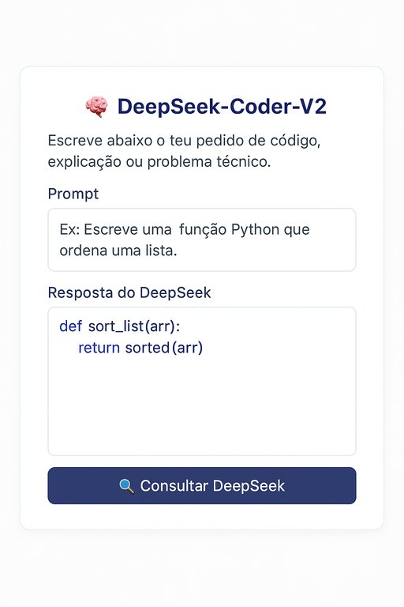

Publicado em 2025-05-31 09:08:10
Num mundo em que a inteligência artificial começa a parecer propriedade privada de meia dúzia de impérios tecnológicos, surge do Oriente um novo jogador, discreto mas audaz: DeepSeek. Um nome que talvez ainda não tenha entrado nos cafés das tertúlias ocidentais, mas que já está a agitar os laboratórios e os servidores de quem observa o futuro com olhos abertos.
A China, há muito mais do que uma fábrica global, começa a mostrar os dentes no campo da inteligência computacional. E fá-lo com um presente para a comunidade mundial: o DeepSeek-Coder-V2, um modelo de código aberto com capacidades que rivalizam com os gigantes do Ocidente — e, em certos aspetos, até os superam.
O DeepSeek-Coder-V2 é um modelo de inteligência artificial generativa especializado em programação. É capaz de interpretar, gerar e explicar código em centenas de linguagens, resolver problemas matemáticos e auxiliar na construção de software, com um desempenho que deixa muitos modelos comerciais a ver navios.
Mas o que o torna realmente fascinante é isto:
👉 É open-source.
👉 Está disponível ao público.
👉 Pode ser integrado por qualquer programador no mundo.
Num tempo em que as grandes corporações escondem os seus modelos como ouro em cofre-forte, o DeepSeek vem abrir as janelas.
O modelo é colossal: 236 mil milhões de parâmetros, mas com uma arquitetura "Mixture-of-Experts" que ativa apenas uma fração deles (21B) em cada inferência — otimizando desempenho e custo computacional.
Tem uma janela de contexto de 128.000 tokens, permitindo compreender grandes blocos de código ou documentos extensos. E, ao contrário de muitos concorrentes, suporta mais de 300 linguagens de programação, das mais exóticas às mais populares.
O código está no GitHub. Os modelos estão na Hugging Face.
O acesso é gratuito, a utilização é ampla, a documentação está clara.
Mas há uma nuvem que paira sobre o sol: o DeepSeek é desenvolvido na China.
E isso levanta dúvidas — legítimas — sobre censura, privacidade e possíveis backdoors.
Num mundo geopolítico polarizado, até o código tem bandeira.
Ainda assim, não há como negar: o valor técnico e filosófico deste projeto é gigantesco.
O DeepSeek devolve à comunidade aquilo que muitos começaram a trancar em datacenters.
Não tens uma RTX 4090? Não faz mal.
Não és engenheiro de machine learning? Também não é preciso.
Com uma simples chamada à API da Hugging Face, qualquer programador pode:
E tudo isso em segundos.
O DeepSeek pode não ser perfeito.
Pode até estar a ser usado como instrumento de influência suave pela China.
Mas é, ao mesmo tempo, um símbolo de que a inteligência artificial não precisa de ser uma caixa fechada, vendida ao quilo.
É código que pensa — mas que não esquece o mundo onde nasceu.
E no meio da guerra silenciosa pelo futuro digital, um modelo como o DeepSeek é uma lufada de ar puro:
inteligência que se partilha, saber que se abre, ferramentas que se libertam.
Escolha software Open-Source para a sua organização